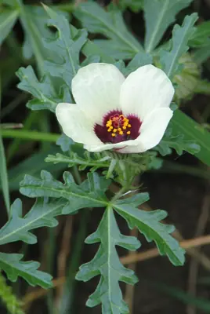

pranet · 出典付きの植物図鑑
flower of an hour
Hibiscus trionum L. · Malvaceae

Hibiscus trionum, commonly called flower-of-an-hour, bladder hibiscus, bladder ketmia, bladder weed, puarangi and venice mallow, is an annual plant native to the Old World tropics and subtropics. It has spread throughout southern Europe both as a weed and cultivated as a garden plant. It has been introduced to the United States as an ornamental where it has become naturalized as a weed of cropland and vacant land, particularly on disturbed ground.
出典: Wikipedia 英語版「Hibiscus trionum」 · CC BY-SA 4.0
異名: Abelmoschus collinsianus Wood, Hibiscus africanus Mill., Hibiscus armeniacus Bouché, Hibiscus collinsianus Nutt. ex Torr. & A.Gray, Hibiscus cuneifolius Garcke, Hibiscus dissectus Wall., Hibiscus hastifolius E.Mey. ex Harv. & Sond., Hibiscus hispidus Mill., Hibiscus humboldtii Schrank ex Colla, Hibiscus humboldtii hort. ex Fisch. & C.A.Mey., Hibiscus marchallianus hort. ex Fisch. & Mey, Hibiscus pallidus Raf. ex S.Watson, Hibiscus physodes E.Mey. ex Harv. & Sond., Hibiscus ternatus Cav., Hibiscus trionicus St.-Lag., Hibiscus uniflorus E.Mey. ex Harv. & Sond., Hibiscus vesicarius Cav., Ketmia trionum (L.) Scop., Laguna ternata Willd., Trionum annuum Medik.
同定や利用は自己責任でお願いします。この図鑑だけを根拠に野生の植物を食べないでください。
出典
- 学名: World Flora Online Plant List 2026-06 · CC0 1.0
- 名前: Wikipedia の記事名と Wikidata · CC0 1.0（Wikidata）。記事名は事実
- 説明: Wikipedia 英語版「Hibiscus trionum」 · CC BY-SA 4.0
- 食用・毒性: World Checklist of Useful Plant Species (Diazgranados et al. 2020, RBG Kew) · CC BY 4.0
- 分布: World Checklist of Vascular Plants (WCVP), RBG Kew, version 2026-06-04 · CC BY 3.0
このページは pranet のデータから自動生成しています。コードは MIT、データは項目ごとのライセンス（説明）。